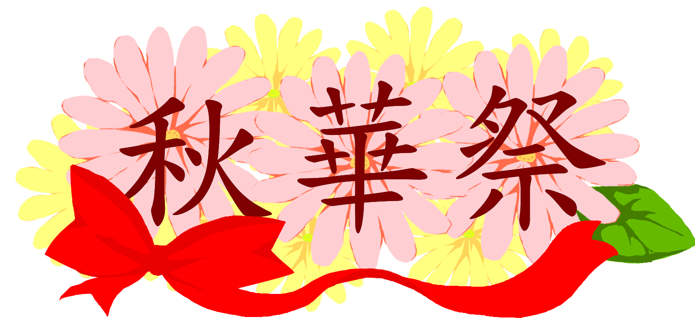

実行委員長あいさつ
私たちはこれからのIT業界で活躍できる社会人となるために勉学に励んでいます。春からクラス全員で協力しながらクラスの出し物などを考えてきました。普段の様子やイベントごとの写真も展示してあるので、ぜひ普段の広島情報専門学校を感じてほしいと思います。また、学園祭ならではの食べ物や商品が当たるゲームも用意しております。ぜひ、ご来場をお待ちしております。
概要
【名称】
秋華祭
【主催】
広島情報専門学校
【日程】
2018年11月10日(土)
【時間】
10:00～15:00
【場所】
広島情報専門学校
テーマについて
『仲間と作る未来の輪』
学園祭は個人の力だけでは完成させることができません。仲間との協力が何よりも大切となります。
そのため、仲間と協力して学園祭を成功させようという意味が込められています。

「秋」は大きな実りを表し、「華」は名誉、盛り、美しいと意味がこめられています。
また、実際には、秋華といった花はありませんが、赤は情熱的で活発に行動する学生たちをイメージし、黄色は楽しさや明るさを表現しています。